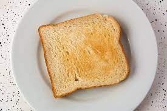

Toast

This Is Toast
This is toast. As a young boy I ate many slices of sad, uncooked, floppy bread. With this recipe I will show you how to make Toast, the superior form, of bread in all of its glory. It is a simple, yet very delicate process, but with my help you'll make the toast almost right every time!
Ingredients
- Sliced Bread
- Butter
- Enthusiasm to learn
- Suspension of disbelief
Steps
- Grab slices of bread
- insert bread into toaster
- set toaster timer to desired darkness
- wait the excruciatingly long time it takes to toast bread
- Be surprised when it pops up
- put literally as much butter as you want upon your toast
- enjoy